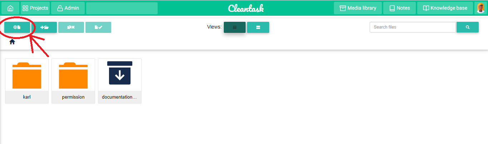
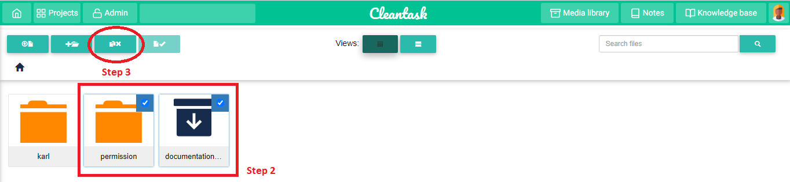

Notes can serve as a useful way to write a down a brainstorm or an idea, to add a note;
Click on the top right button “Notes”.
On the new page that appears, click on the bottom right button with the plus sign on it. A pop up will appear with various fields to help you customize your note – it is even possible to select the background colour of the note to be created.
Clean task provides the possibility of uploading a file to the platform in the directory of your choice. This is quite useful because it gives you the ability to safeguard documents of your choice, hence providing a reliable backup option for your files. To upload a file,
Click on the top right button “Media Library”.
On the new page that appears, navigate to the directory (folder) of your choice and click on the first button found in the navigation bar

On the pop up the appears click on “add files” and select the files to be uploaded and click “start upload”.
Note: Only a maximum of 5 files can be uploaded simultaneously.
On the new page that appears, navigate to the directory (folder) of your choice and select the files/folder you want to delete by clicking on the top-right checkbox that appears on a file/folder when hovering on it.

After the files have been selected, click on the delete button found on the navigation bar.
This is an area where a set of articles previously added by the administrator of the platform can be accessed. Here, it is possible to read an article and give a feedback, saying whether the article was helpful or not. In order to read an article found in the knowledge base,
Click on the top right button “Knowledge base”.
The new page that appears consist of the various knowledge base categories. Select a category by clicking on the “view article” button that appears when hovering on it.
A category can be made up of 0 or several articles. To read any of the articles found in a category, simply click on the article.